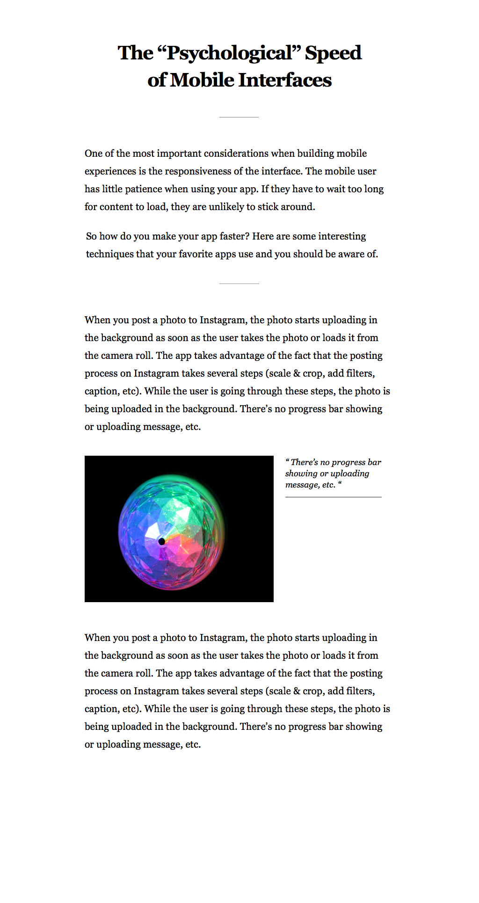
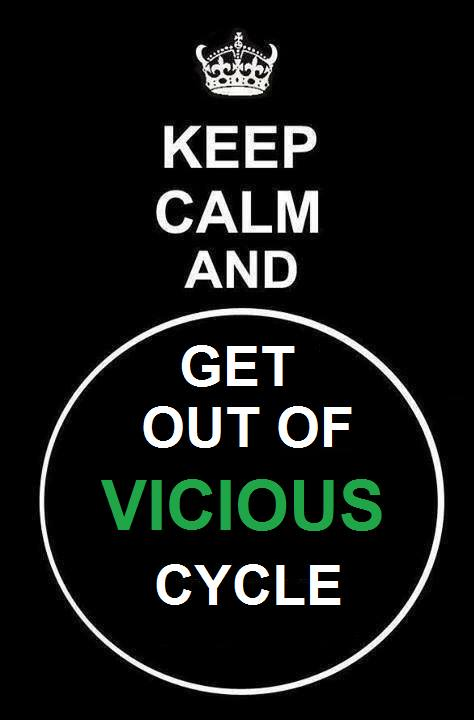

13 September 2014
...And This is how it begins...
I came back from office and went into kitchen to see what my friends were up to.
Babaji: Hey Raka did you know that we took a domain. It is called milkandcigarettes dot so. See it's like milk and cigarettes dot so ...hahahahaha
Me: milkandcigarettes?
Ghome: why did you tell him? It was supposed to be a surprise.
Justass and Babaji: See it's like we wake up every day and the first thing we think of is milk for tea and cigarettes. That's how milkandcigarettes.so was started. They told me everything about the project. From deployment, architecture and how to take it forward.
After few days, I asked Justass lets make design and write html, css and make it live.
"This was the design which he made in the beginning."
And now it was my turn to build and told Justass I will do it. But after few days I forgot and on Tuesday evening he asked hey did you do that? I was like what? The milkandcigarettes. Oh that I will complete it today.
I was busy all the day and I almost forgot whole thing. I was fully tired due to working full day in the office. While I was returning back from the office I thought I will complete this milk and cigarettes in Cab. So I boarded the cab and started writing the code. I completed the page and slept in the cab.
After reaching home I showed to Justass and told him I did this in the cab today. Everyone was amazed.
On Saturday we decided to make it live as we discussed let us not put some dummy article. And told me to write how I completed my task, write about it.
That's it guys see you in next article.
Till Then
